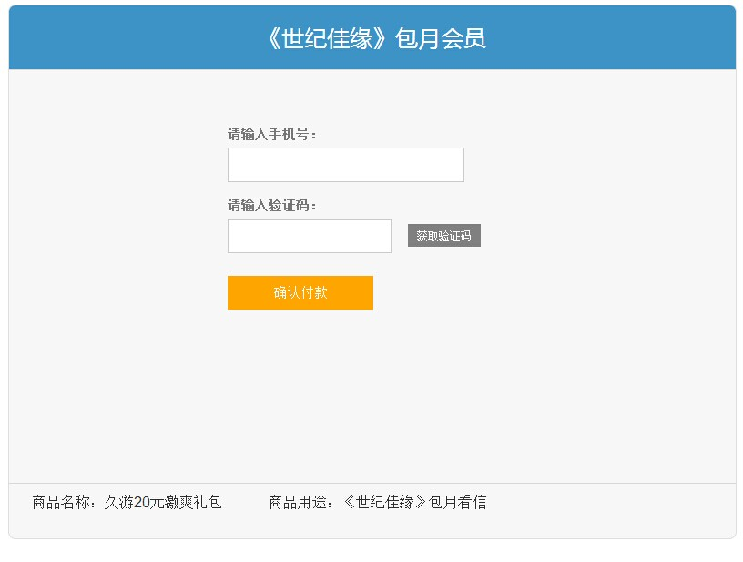

做个网页，改了好多次，终于比较满意了，如下图。(10-16)

《深入体验java web开发核心内幕》，张孝祥的这本杰作，在卓越和当当居然都没有卖的了。
当年，在南京的防空洞地下室，在杭州的小旅馆，准备第二天的面试时，看的都是这本书。(10-15)
这几天在忙咪咕音乐基地的web方案接入，进展比预想的要顺利。。。 (10-15)
在58同城上发了个贴，想把《java swing》卖掉，估计不会有人买，这本砖头太过时了。。。 (10-112)
10点到13点，在弘体打了3小时羽毛球，打完去吃了潮汕砂锅粥，cloud，中离，603，四个人，每人一瓶啤酒，喝着啤酒，聊聊当年，爽啊。
下午过赤沙，在广商图书馆借了两本书，然后去阿姨家吃了晚饭，走时还拿了包月饼，呵，我真是的，又吃又拿，不像话。。(10-12)
原来电信卡是必须支持cdma网络格式的手机才能用的。。。 (10-11)
在家看了动画片《魁拔》的1和2，动画效果挺好，就是每一集的剧情短了点。 (10-10)
今天下午的工作：根据支付宝的扣费通知，模拟出一个MM扣费通知，给到开发方服务器。 (10-9)
刷机一次，不满意。
再刷，成砖头了，晕。。
继续刷，完美的4.0，耶。。。 (10-9)
把这两个导航栏改为用js实现了。以后添加微博月份时，就不用修改很多地方了。(10-7)
生活需要进步，不敢再浪费光阴了。 (10-7)
早起在12306买了个返程票。然后赶去火车站，，， (10-1)